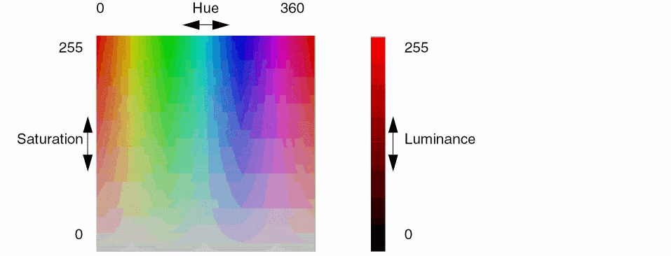

create_map_coloring
create_map_coloring -names_coloringName-type {HSV [[ -startHuei_0to360][ -stopHuei_0to360] [ -startSaturationi_0to255][ -stopSaturationi_0to255] [ -startLuminancei_0to255][ -stopLuminancei_0to255] [ -startValuef_value][ -stopValuef_value] ] | threshold [ -ranges {{f_startValuef_stopValuei_redi_greeni_blue}…} ]}
Description
Creates map colorings to use when displaying color maps. Two types of color mapping are available: HSV and threshold.
-
HSV (Hue Saturation Value)
HSV color mapping represents color as a continuous change of hue, saturation and luminance (or brightness) as the data value increases. You specify the range for each of these color components. By default, the computed range of data values is mapped to each range of given components to determine the color for each map tile. You can optionally limit the range of data values to color.- Hue specifies the color from red (0), through yellows, greens, blues, magenta and finally back to red (360), completing the color wheel.
- Saturation specifies the color intensity from gray (0) to vivid (255). For a consistent saturation level, specify the same values for start and stop saturation.
-
Luminance chooses the color brightness from light (0) to dark (255). For consistent brightness, specify the same values for start and stop luminance
.

-
Threshold
Threshold color mapping assigns a color, given by red, green and blue (RGB) components, for a range of data values. For more color detail, a greater number of ranges must be specified. The following is a sampling of colors with their RGB representations:Color Red Green Blue
For example, three ranges are given in the following:-ranges {50 60 255 0 0 60 70 0 255 0 70 80 0 0 255}
Data in the first range (50-60) are colored red (255 0 0), in the second range (60-70) green (0 255 0), and in the last range (70-80) blue (0 0 255). Data outside of the given ranges (0-50, 80 and above) will not be colored.Use the Select Color form to assist you in choosing HSV and RGB settings. To access this form, right-click a layer or object name in the Layer Object Display Panel, then click the Red-Green-Blue color bars on the right hand side of the pop-up. The Select Color form appears. Change the HSV or RGB values on the right side of the form to see the color that is represented by the values chosen.
Arguments
Examples
Two color maps, thermalMap and thermalMapBands, are predefined. The following examples illustrate how these would be set using create_map_coloring.
-
thermalMapcreate_map_coloring -name thermalMap -type HSV -startHue 180 -stopHue 0 -startSaturation 125 -stopSaturation 255 -startLuminance 125 -stopLuminance 225
This HSV mapping colors tiles by linearly mapping the minimum and maximum values for tiles to the color map scale starting with blue (180) at the minimum value, through green, and to red (0) at the maximum value. Saturation (opacity) and luminance are scaled in a similar manner. -
thermalMapBandscreate_map_coloring -name thermalMapBands -type threshold -ranges {60 80 0 0 255 80 95 0 255 0 95 100 255 0 0}
This threshold mapping colors tiles with values of 60-80 in blue, values of 80-95 in green, and values of 95-100 in red. Tiles with values under 60 are not colored.
Related Topics
Return to top